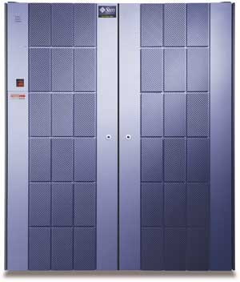
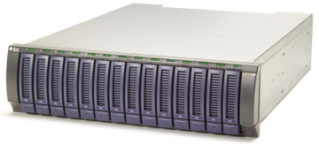
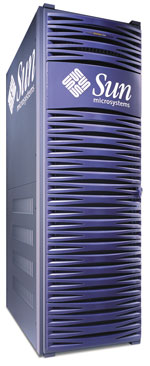
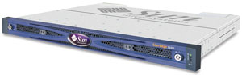
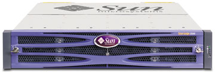
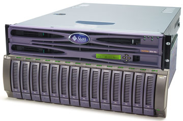

Александр Николов
anikolov@bytemag.ru
Современные системы хранения данных, появившиеся как ответ на потребности активно развивающегося бизнеса с его мощнейшими информационными потоками, помогают растущим компаниям эффективно решать ряд критически важных для бизнеса задач - оптимизировать ИТ-инфраструктуру предприятия, повысив отдачу от вложений в ее развитие, снизить стоимость владения информацией, повысить надежность ее хранения, защитив от утрат, искажений и вредоносных внешних воздействий. Системы хранения прочно заняли одно из важнейших мест среди технологий, обеспечивающих непрерывную и эффективную работу современных предприятий с максимальной экономической отдачей.
В ряду лидеров мировой ИТ-индустрии, занимающихся производством и поставкой дисковых систем хранения, пристального внимания заслуживает корпорация Sun Microsystems (http://www.sun.com), известная сбалансированным модельным рядом, рассчитанным на самый широкий круг потребителей из различных сфер деятельности и разнообразных отраслей. После недавнего приобретения компании StorageTek и расширения диапазона своих предложений за счет систем и сервисов архивирования данных и управления жизненным циклом информации (Information Lifecycle Management) Sun вполне обоснованно сможет бороться за лидерство в этом сегменте рынка.
Системы хранения данных Sun Microsystems, поставляемые под брэндом Sun StorEdge, гибко адаптируются под текущие потребности в мощностях и услугах предприятий любого масштаба. Они полностью интегрируются с серверами Sun и позволяют достичь высокого уровня производительности и надежности. Системы Sun StorEdge без проблем встраиваются и в гетерогенные вычислительные среды, защищая сделанные ранее инвестиции. Гибкие модульные и масштабируемые решения, присутствующие в арсенале Sun Microsystems, ПО и сервисы для задач любого уровня - от систем для рабочих групп до решений уровня вычислительного центра, позволяют заказчикам консолидировать данные и оптимизировать их использование в рамках проектов практически любой сложности.
Ниже в общих чертах мы попытаемся дать обзор характеристик и возможностей дисковых систем хранения из семейства Sun StorEdge, разделив модели по категориям.
Системы уровня вычислительного центра
Семейство систем Sun StorEdge 9900, относящихся к этому классу, за счет ряда технических приемов, таких, как зеркалирование кэш-памяти, обеспечивает самую высокую степень масштабируемости, уровень готовности и производительности. Модели, входящие в это семейство, станут хорошим выбором для создания SAN-решений промышленного масштаба и консолидации систем хранения данных.
В семейство Sun StorEdge 9900 входят системы Sun StorEdge 9970, 9980, 9985 и 9990. Модели 9970 и 9980 сочетают в себе высокую производительность, большую емкость, возможности виртуализации и функциональную поддержку архитектуры с высокой плотностью монтажа. Модель Sun StorEdge 9900 воплощает в себе идею корпорации Sun о создании законченных вычислительных систем, которые способны удовлетворить все потребности пользователей, и нацелена на создание SAN-решений на базе серверов Sun Fire 15K и 12K и Sun Enterprise 10000. Она оптимизирована для работы в среде ОС Solaris, сертифицирована для использования в вычислительных кластерах Sun Cluster и полностью совместима с пакетом ПО Sun StorEdge Availability, Utilization, Performance и Resource Management. Кроме того, системы Sun StorEdge 9990 допускают упреждающее управление с помощью функции call-home и поддерживаются всемирными центрами поддержки критически важных для бизнеса задач.
|  | Система хранения серии Sun StorEdge 9900.
|
StorEdge 9970
Система Sun StorEdge 9970 обеспечивает высокий уровень производительности и степени готовности для центров обработки данных. Виртуализационные возможности системы обеспечивают гибкость в конфигурировании инфраструктуры сетей хранения. Модель 9970 проста в эксплуатации и облегчает управление данными. Доступно ПО для поддержки основных приложений управления данными, обычно использующихся в центрах обработки данных (управление директориями, репликация данных в реальном времени, дистанционное зеркалирование для восстановления после сбоев).
Финансы, управление поставками, электронная коммерция, планирование ресурсов предприятия относятся к ключевым сферам применения этой системы. Она нацелена на заказчиков из энергетического сектора, учреждений образования и здравоохранения, финансовых структур, госорганов, производственных компаний, индустрии развлечений, СМИ и телекоммуникационного сектора.
Общее количество дисков в StorEdge 9970 может варьироваться от пяти до 128. Для повышения уровня отказоустойчивости в системе можно установить до четырех запасных дисков с возможностью горячей замены. Общая неформатированная емкость StorEdge 9970 при использовании 146-Гбайт дисков со скоростью вращения 10 000 об./мин равна 17,5 Тбайт; в случае 73-Гбайт дисков со скоростью вращения 10 000 или 15 000 об./мин - 9,3 Тбайт. При использовании дисков емкостью 36 Гбайт со скоростью вращения 15 000 об./мин общая неформатированная емкость StorEdge 9970 составляет 4,6 Тбайт.
Неформатированная полезная емкость массивов уровня RAID 5, созданных по схеме 3 + 1, для решений на базе открытых систем достигает 15 Тбайт, для S/390-совместимых систем - 14,1 Тбайт. Полезная емкость массивов уровня RAID 1+, созданных по схеме 2 + 2, для открытых систем составляет 8,9 Тбайт, а для S/390-совместимых - 7,7 Тбайт.
Система хранения StorEdge 9970 совместима со следующими открытыми ОС: Compaq Tru64 Unix, Solaris Operating Environment, HP-UX, IBM AIX, Novell NetWare, Red Hat Linux, SGI IRIX, Microsoft Windows NT/2000, а также с операционным окружением мэйнфреймов: OS/390, MVS/ESA, TPF/MPLF, VM/ESA, VM/XA, VM/HPO, VSE/ESA, VSE/SP, Z/OS, Linux for Z Series.
StorEdge 9980
Система StorEdge 9980 предоставляет высокий уровень производительности и емкости, необходимый для вычислительных сред крупных центров обработки данных. Эта система, обладающая высокой степенью готовности и масштабируемости, в базовой конфигурации состоит из двух блоков: блока управления и матричного блока хранения данных. Блок управления содержит модули кэш-памяти и коммутации, интерфейсы хоста и устройств, процессоры дисковых массивов, а также сервисный процессор. Поддерживается до четырех матричных блоков хранения данных. Каждый такой блок снабжен резервным блоком питания и может содержать до 256 устройств.
Возможности виртуализации данной системы обеспечивают консолидацию устройств хранения данных, что позволяет снизить совокупную стоимость владения за счет подключения к множеству хостов и обеспечения большей гибкости в конфигурировании инфраструктуры сетей хранения данных. Система хранения данных несложна в эксплуатации и позволяет упростить управление данными. Доступно ПО для поддержки основных приложений управления данными, обычно использующихся в центрах обработки данных, таких, как управление каталогами, репликация данных в реальном времени, а также дистанционное зеркалирование для восстановления после сбоев.
Ключевые сферы применения StorEdge 9980 - финансы, управление поставками, электронная коммерция, планирование ресурсов предприятия.
Заказчики из сферы образования, энергетического сектора, финансовых структур, госсектора, учреждений здравоохранения, промышленных предприятий, индустрии развлечений, СМИ, издательского бизнеса и телекоммуникационной сферы рассматриваются Sun как целевая аудитория для этой системы.
Общее количество дисков в системе StorEdge 9980 может варьироваться от пяти до 1024. Для повышения уровня отказоустойчивости можно устанавливать запасные диски с возможностью горячей замены - от одного до 16. Общая неформатированная емкость StorEdge 9980 при использовании 146-Гбайт дисков со скоростью вращения шпинделя 10 000 об./мин составляет 147,5 Тбайт. В случае дисков емкостью 73 Гбайт со скоростью вращения 10 000 или 15 000 об./мин общая емкость системы составит 74,7 Тбайт, а для дисков емкостью 36 Гбайт (скорость вращения 15 000 об./мин) общая неформатированная емкость StorEdge 9980 равна 36,8 Тбайт.
Неформатированная полезная емкость массивов уровня RAID 5, созданных по схеме 7 + 1, для решений на базе открытых систем составляет 127,8 Тбайт, для S/390-совместимых систем - 119 Тбайт.
Полезная емкость массивов уровня RAID 1+, созданных по схеме 4 + 4, в случае открытых систем равна 73 Тбайт, в случае S/390-совместимых - 63,5 Тбайт.
Система хранения StorEdge 9980 совместима со следующими ОС: Compaq Tru64 Unix, Solaris Operating Environment, HP-UX, IBM AIX, Novell NetWare, Red Hat Linux, SGI IRIX, Microsoft Windows NT/2000, а также с операционным окружением мэйнфреймов: OS/390, MVS/ESA, TPF/MPLF, VM/ESA, VM/XA, VM/HPO, VSE/ESA, VSE/SP, Z/OS, Linux for Z Series.
StorEdge 9990
Ключевые характеристики системы StorEdge 9990 - масштабируемость, высокая производительность, надежность, высокая готовность и ремонтопригодность, виртуализация, централизованное управление ресурсами, защита данных и катастрофоустойчивость.
Масштабируемость достигается за счет высокоскоростной архитектуры с матричным коммутатором, поддержки значительного числа разнородных хост-соединений, расширяемого до 192 общего количества портов Fibre Channel и сверхвысокой плотности размещения компонентов внутри системы.
Высокая производительность есть следствие эффективной внутренней архитектуры, основанной на принципе матричных коммутируемых соединений, и быстрых (2 Гбит/с) каналов Fibre Channel, используемых для доступа к системе хранения.
Надежность, высокая готовность и ремонтопригодность базируются на хорошо известных принципах обеспечения отказоустойчивости, в частности, на резервировании всех критически важных компонентов системы и зеркалировании кэш-памяти, самодиагностике с информированием сервисного центра Sun о потенциальных проблемах и безопасном обновлении системного ПО.
Система виртуализации Sun StorEdge 9990 Virtual Partition Manager обеспечивает эффективное манипулирование логическими портами ввода-вывода, блоками кэш-памяти и дисковым пространством, сгруппированными в независимые разделы под названием Virtual Private Storage Machines.
По мнению Sun Microsystems, система StorEdge 9990 наилучшим образом подходит для работы с ключевыми, наиболее критичными для бизнеса заказчиков приложениями из области финансов, управления поставками, электронной коммерции и планирования ресурсов предприятия. Sun Microsystems ориентирует на эту систему заказчиков из сферы образования, энергетического сектора, финансовой сферы, госсектора, здравоохранения, промышленного производства, индустрии развлечений, СМИ и издательского бизнеса, а также из телекоммуникационной сферы.
Общее число дисков в StorEdge 9990 может варьироваться от пяти до 1152. Для повышения уровня отказоустойчивости в системе могут быть установлены запасные диски с возможностью горячей замены - от одного до 16. Общая неформатированная емкость StorEdge 9990 при использовании дисков емкостью 146 Гбайт со скоростью вращения шпинделя 10 000 об./мин составляет 165 Тбайт, при использовании аналогичных по характеристикам дисков емкостью 300 Гбайт она возрастает до 330 Тбайт. В случае применения высокоскоростных дисков (15 000 об./мин) объемом 73 Гбайт общая емкость системы составляет 85 Тбайт.
Неформатированная полезная емкость массивов уровня RAID 5 при использовании 146-Гбайт дисков со скоростью вращения 10 000 об./мин для решений на базе открытых систем составляет 143,9 Тбайт, для zOS-совместимых систем - 135,2 Тбайт. Полезная емкость массивов уровня RAID 1+ при использовании тех же дисков в случае открытых систем составляет 82,5 Тбайт, в случае S/390-совместимых систем - 71,8 Тбайт.
Система хранения StorEdge 9990 совместима практически со всеми наиболее распространенными ОС, присутствующими сегодня на рынке: Compaq Tru64 Unix, Solaris, HP-UX, IBM AIX, Novell NetWare, Red Hat Linux, Novell SuSe Linux, SGI IRIX, Microsoft Windows NT/2000.
StorEdge 9985
Система StorEdge 9985 - модульная версия системы StorEdge 9990 с горизонтальным масштабированием, имеющая ту же матричную архитектуру, микрокод, ПО и протоколы связи. StorEdge 9985 - правильный выбор для тех клиентов, которые уже вложили средства в системы серии StorEdge 9900 и ПО для них и нуждаются в совместимой системе для расширения, но которым не требуются полные возможности StorEdge 9900. Для тех клиентов, которые в настоящее время используют системы StorEdge 9970 и готовы к обновлению технологий, система StorEdge 9985 также станет удачным выбором.
Ключевые приложения для StorEdge 9985 - это задачи обработки транзакций в режиме on-line, управление запасами и поставками, приложения для вычислительных центров, задачи управления жизненным циклом информации, восстановления данных и обеспечения непрерывности бизнес-процессов, консолидация информации, управление инфраструктурой хранения данных.
Система нацелена на заказчиков из сферы образования, финансового сектора, госорганов, здравоохранения, производства и телекоммуникаций.
В системе могут использоваться жесткие диски емкостью 73, 146 или 300 Гбайт со скоростью вращения шпинделя 15 000 об./мин. Суммарная емкость системы при использовании дисков объемом 73 Гбайт составляет 17 Tбайт, в случае 146-Гбайт дисков - 34 Tбайт, 300-Гбайт дисков - 72 Tбайт. Максимальная внешняя емкость системы достигает 16 Пбайт.
Заказчики могут организовывать RAID-массивы уровней 1, 5 и 6, при этом доступны следующие конфигурации: RAID1 2+2, RAID5 3+1, RAID6 6+2.
Система Sun StorEdge 9985 совместима с большинством наиболее распространенных ОС, используемых заказчиками, в том числе с Solaris 7, 8 и 9, HP-UX, IBM AIX, Microsoft Windows NT/2000/Microsoft Windows Server 2003, Compaq Tru64 Unix, SGI IRIX, Novell NetWare, Red Hat Linux и IBM zOS.
Системы уровня предприятия
Эти системы хранения данных с высокими плотностью размещения дисков и степенью готовности наилучшим образом подходят для решения критически важных для бизнеса задач. Все они оптимизированы для сквозной интеграции в ИТ-инфраструктуру Sun, совместимы с операционной средой Solaris и ПО StorEdge SAM-FS и QFS. Они также поддерживают интеграцию в гетерогенные среды. Системы этого класса включают решения для организации высокопроизводительных вычислений и реализуют современную технологию виртуализации ресурсов.
StorEdge 6120 Array
Система StorEdge 6120 - легко адаптируемое к текущим потребностям бизнеса решение для динамичных компаний. Она представляет собой гибкую модульную платформу с высоким уровнем готовности, без проблем встраиваемую в уже существующие решения, что позволяет реализовать с ее помощью поддержку критически важных приложений. Система StorEdge 6120 поставляется заказчикам либо в стандартной конфигурации с одним контроллером, либо в HA-конфигурации (high availability) - с резервированием основных компонентов. В последнем случае система оснащается парой контроллеров и включает ряд дополнительных технологий обеспечения отказоустойчивости. Контроллеры StorEdge 6120 позволяют создавать RAID-массивы уровней 0, 1, 1+0 и 5. Обе разновидности могут быть укомплектованы дисками частично или в полном объеме, а для увеличения объема хранения предусмотрены дополнительные модули расширения.
К ключевым сферам применения StorEdge 6120 относятся задачи обеспечения финансовых операций предприятия, обслуживание CMS-систем, систем поддержки принятия решений и ERP-систем, электронная коммерция, поддержка процесса разработки ПО. Целевая аудитория StorEdge 6120 - компании из сферы образования, правительственные структуры, медицинские центры, СМИ, представители индустрии развлечений и издательского бизнеса.
В системе StorEdge 6120 могут быть установлены диски емкостью 36 Гбайт со скоростью вращения 15 000 об./мин либо 73 Гбайт и 146 Гбайт со скоростью вращения 10 000 об./мин. При использовании одного контроллера суммарная емкость системы составляет соответственно 1,5; 3,1 и 6,1 Тбайт. В случае использования двух контроллеров эти значения возрастают до 3; 6,1 и 12,3 Тбайт.
Система StorEdge 6120 совместима с ОС Solaris 8, 9, Microsoft Windows NT/2000/Server 2003, HP-UX 11.0 и 11.i, IBM AIX 4.3.3 и 5.1, Red Hat Linux 7.0.
StorEdge 6130 Array
Система StorEdge 6130 создана для поддержания критичных для бизнеса приложений и потому обладает расширенным набором средств защиты и восстановления данных и обеспечения постоянной готовности. Модульная конструкция и гибкость модели 6130 позволяют заказчикам наращивать мощность системы хранения по мере роста потребностей бизнес-приложений в дополнительных ресурсах. В комплект поставки системы входит набор программных пакетов Sun StorEdge Data Replicator, Data Snapshot и Data Volume Copy, призванных обеспечить постоянную доступность хранимых данных как для пользователей, так и для приложений. Централизованные средства управления StorEdge 6130 упрощают администрирование и мониторинг системы, попутно снижая расходы на хранение информации. Встроенные средства повышения эффективности позволяют полностью утилизовать всю емкость систем StorEdge 6130, обеспечивая контроль за ростом потребностей предприятия при гарантированной сохранности данных.
Система StorEdge 6130 в первую очередь предназначена для поддержки процесса разработки ПО, финансовых операций предприятия, обслуживания CMS- и ERP-систем, электронной коммерции, поддержки систем электронной почты и Web-сервисов, а также хранения цифрового медиа-контента. Основными потребителями StorEdge 6130 должны стать компании из сферы образования, правительственные структуры, финансовые структуры, медицинские центры, СМИ, представители индустрии развлечений и издательского бизнеса.
В системе StorEdge 6130 могут быть установлены диски Fibre Channel емкостью 73 Гбайт со скоростью вращения 10 000 или 15 000 об./мин либо 146 Гбайт (скорость вращения 10 000 об./мин). Кроме того, в комплектах расширения можно использовать диски с интерфейсом SATA, емкость которых равна 400 Гбайт, а скорость вращения - 7200 об./мин. Общее количество установленных дисков варьируется от пяти до 112, при этом они могут быть сгруппированы в RAID-массивы уровней 0, 1, 3, 5, и 1+0. Максимальная емкость одного модуля составляет 1 Тбайт при использовании 73-Гбайт дисков, 2 Тбайт в случае 146-Гбайт дисков и 5,6 Тбайт для 400-Гбайт дисков. Совокупная емкость всей системы может достигать 41,2 Тбайт.
Система StorEdge 6130 совместима с ОС Solaris 8, 9 и выше, Microsoft Windows 2000/Server 2003, HP-UX 11.0 и 11.i, IBM AIX 5.2, 32- и 64-разрядными Red Hat Linux Enterprise Edition AS/WS 2.1 и 3.0, 32-разрядной Red Hat Linux Enterprise Edition ES 2.1, 32- и 64-разрядными Novell SuSe Linux ES 8.х, Netware 6 и 6.5 и SGI IRIX 6.5.22.
|  | Sun StorEdge 6130 Array.
|
StorEdge 6920 System
Для компаний, сталкивающихся со стремительным ростом объемов хранимой информации и необходимостью администрирования множества разнородных приложений, система StorEdge 6920 представляется целостной и эффективной - в плане соотношения цена/производительность - платформой для консолидации. С ее помощью множество различных систем хранения, в том числе и сторонних производителей, можно интегрировать и виртуализовать в рамках единой модульной системы, что снижает сложность и стоимость администрирования хранилищ данных. Кроме того, действие комплекса входящих в состав StorEdge 6920 сервисов для обеспечения высокой готовности может быть распространено на унаследованные и развернутые ранее решения, при этом гарантируется сохранность размещенных на них данных. Система обладает масштабируемостью на уровне решений самого высокого класса и обеспечивает заказчикам производительность, доступность и емкость на уровне как сегодняшних требований бизнеса, так и будущих, возникающих по мере роста предприятия.
К ключевым сферам применения StorEdge 6920 относятся задачи обеспечения финансовых операций предприятия, обслуживание CMS-систем, систем поддержки принятия решений и ERP-систем, обеспечение непрерывности критически важных бизнес-процессов предприятия, защита от катастроф, поддержка работоспособности ИТ-инфраструктуры, консолидация информационных хранилищ, поддержка Web-сервисов. В качестве потребителей Sun рассматривает компании из сферы образования, финансовые учреждения, правительственные структуры, медицинские центры, промышленные предприятия, телекоммуникационные компании, розничные торговые сети, СМИ, представителей индустрии развлечений и издательского бизнеса.
В системе StorEdge 6920 могут быть установлены диски емкостью 36 Гбайт (скорость вращения 15 000 об./мин), 73 Гбайт (10 000 или 15 000 об./мин) и 146 Гбайт (10 000 об./мин). В зависимости от конфигурации общая емкость системы в стандартной поставке составляет соответственно 4; 8,2 и 16,4 Тбайт. При использовании двух дополнительных стоек расширения она увеличивается до 16,1; 32,7 и 65,4 Тбайт. В общей сложности в системе доступно 28 портов Fibre Channel.
Система StorEdge 6920 совместима с ОС Solaris 8 и выше, Microsoft Windows 2000, Microsoft Windows Server 2003, 64-разрядной IBM-AIX 5.1, Hewlett-Packard HP-UX 11.0 и 11i, Red Hat Linux Enterprise Edition 2.1 (WS/AS/ES).
|  | Sun StorEdge 6920 System.
|
Системы уровня рабочих групп
Системы этого класса включают резервные компоненты, поддержку дисковых массивов RAID разных уровней, резервирование контроллера и возможность автоматического восстановления после сбоев, что позволяет максимально увеличить производительность и степень готовности приложений для рабочих групп и обеспечивает гибкий и экономичный подход для поэтапного наращивания возможностей систем хранения данных. Они оптимизированы для работы в среде ОС Solaris и полностью совместимы с пакетом ПО Sun StorEdge Availability, Utilization и Performance.
Заказчики могут расширять и настраивать систему по мере необходимости, получая максимальную отдачу от капиталовложений в систему хранения данных.
StorEdge 3120 SCSI Array
Система StorEdge 3120 SCSI Array - компактная, низкопрофильная модульная система начального уровня, рассчитанная на расширение дисковой емкости небольших серверов. Корпус высотой 1U вмещает до четырех носителей, что в итоге обеспечивает больше 1 Тбайт суммарной емкости.
Система StorEdge 3120 SCSI Array нацелена на обслуживание финансовых операций, поддержку CMS- и ERP-систем и Web-инфраструктуры предприятия. Она адаптирована под требования заказчиков из сферы образования, энергетических компаний, финансовых институтов, правительственных структур, медицинских центров, промышленных предприятий, СМИ, представителей индустрии развлечений и издательского бизнеса, сетей розничной торговли и телекоммуникационных компаний, разработчиков ПО.
В системе StorEdge 3120 SCSI Array используются 36- и 73-Гбайт диски со скоростью вращения 15 000 об./мин, а также диски емкостью 36, 73, 146 и 300 Гбайт со скоростью вращения 10 000 об./мин. Для подключения дисков и хост-соединений в системе используется интерфейс Ultra320 SCSI.
Система совместима с ОС Solaris 8, 9 и 10, Microsoft Windows NT 4.0/2000/Server 2003, 32- и 64-разрядными версиями Red Hat Linux Enterprise Edition, Novell SuSE Linux Enterprise Server 8, Novell SuSE Linux 9, Novell NetWare 5.1/6.0/6.5, HP-UX 11.0 и 11i, 32- и 64-разрядными версиями IBM-AIX 4.3.3 и 5.1L.
|  | Sun StorEdge 3120 SCSI Array.
|
StorEdge 3310 SCSI Array
Система StorEdge 3310 SCSI Array характеризуется емкостью хранения в сотни гигабайт и шестью хост-соединениями в потенциале. Модульная конструкция и простой Web-интерфейс управления, а также диски, вентиляторы охлаждения, источники питания, RAID-контроллеры и интерфейсные карты с возможностью горячей замены позволяют быстро и с минимальными издержками развернуть хранилище данных и наладить работу предприятия или отдела.
Система StorEdge 3310 SCSI Array нацелена на обслуживание финансовых операций, поддержку CMS- и ERP-систем, электронной коммерции, процесса разработки ПО. Корпорация Sun предлагает эту модель заказчикам из правительственных структур, промышленным предприятиям, сетям розничной торговли и телекоммуникационным компаниям.
В системе StorEdge 3310 SCSI Array применяются как 36- и 73-Гбайт диски со скоростью вращения 15 000 об./мин, так и диски емкостью 36, 73, 146 и 300 Гбайт со скоростью вращения 10 000 об./мин. В конфигурации с 300-Гбайт дисками суммарная емкость системы составляет 68,4 Тбайт. Для подключения накопителей и хост-соединений используется интерфейс Ultra160 SCSI.
Хранилище StorEdge 3310 SCSI Array совместимо с ОС Solaris 8, 9 и 10, Microsoft Windows NT 4.0/2000/Server 2003, 32- и 64-разрядными версиями Red Hat Linux Enterprise Edition, Novell SuSE Linux Enterprise Server 8, Novell SuSE Linux 9, Novell NetWare 5.1/6.0/6.5, HP-UX 11.0 и 11i, 32- и 64-разрядными версиями IBM-AIX 4.3.3 и 5.1L.
StorEdge 3510 FC Array
Модель StorEdge 3510 FC Array представляет собой модульную систему, что позволяет заказчикам поэтапно наращивать емкость хранения в зависимости от их текущих потребностей и способствует оптимизации вложений в ИТ-инфраструктуру. К системе может быть подключено до восьми серверов, при этом не требуется специального коммутатора. Благодаря интуитивному интерфейсу управления у заказчиков не должно возникать проблем ни при развертывании системы, ни при текущем управлении, конфигурировании и администрировании.
Несмотря на свою простоту, StorEdge 3510 FC Array обладает рядом черт, присущих системам хранения корпоративного уровня. К ним относятся дублированные системы вентилирования и кондиционирования с возможностью горячей замены компонентов, RAID-контроллеры с зеркалированием кэшей, hot-swap диски, динамическое расширение LUN, динамическое перераспределение емкости, удаленный мониторинг, безопасное обновление микрокода.
Система StorEdge 3510 FC Array нацелена на задачи, связанные с обслуживанием CMS- и ERP-систем, задачи архивирования и восстановления данных, управления SAN-сетями. Она рассчитана на заказчиков из сферы образования, правительственные структуры, медицинские центры, промышленные предприятия, СМИ, представителей индустрии развлечений и издательского бизнеса, сети розничной торговли и телекоммуникационные компании.
В системе StorEdge 3510 FC Array используются жесткие диски емкостью 36 и 73 Гбайт со скоростью вращения 15 000 об./мин и диски емкостью 73, 146 и 300 Гбайт со скоростью вращения 10 000 об./мин. Они могут быть объединены в RAID-массивы уровней 0, 1, 0+1, 3, 5, 3+0 и 5+0. Максимальная сырая емкость системы в стандартной комплектации составляет 436 Гбайт для 36-Гбайт дисков, 876 Гбайт для 73-Гбайт дисков, 1,72 Тбайт для 146-Гбайт дисков и 3,6 Тбайт для 300-Гбайт дисков. С модулями расширения этот параметр возрастает до 3,89; 7,8; 15,7 и 32,4 Тбайт соответственно. В качестве хост-интерфейса используется 2-Гбит/с соединение Fibre Channel.
Система совместима с ОС Solaris 8, 9 и 10, Microsoft Windows NT 4.0/2000/Server 2003, 32- и 64-разрядными версиями Red Hat Linux Enterprise Edition, Novell SuSE Linux Enterprise Server 8, Novell SuSE Linux 9, Novell NetWare 5.1/6.0/6.5, HP-UX 11.0 и 11i, 32- и 64-разрядными версиями IBM-AIX 4.3.3 и 5.1L.
StorEdge 3511 FC Array with SATA
StorEdge 3511 FC Array with SATA представляет собой хорошо расширяемые, устойчивые к сбоям и отказам системы хранения, нацеленные на работу с бизнес-приложениями второго эшелона. Они отлично подходят для решения второстепенных, но также весьма важных задач, аналогичных организации массивных репозиториев данных, не слишком требовательных к производительности. В отличие от многих конкурирующих решений, система имеет значительный задел для увеличения емкости хранения, повышения производительности и улучшения эффективности работы.
Основные сферы применения StorEdge 3511 FC Array with SATA - это задачи, связанные с обслуживанием CMS- и ERP-систем, задачи архивирования и восстановления данных, управления SAN-сетями. Целевая аудитория системы - компании из сферы образования, правительственные структуры, медицинские центры, промышленные предприятия, СМИ, представители индустрии развлечений и издательского бизнеса, сети розничной торговли и телекоммуникационные компании.
В системе StorEdge 3511 FC Array with SATA используются SATA-диски со скоростью вращения 7200 об./мин емкостью 250 и 400 Гбайт. Максимальное число дисков, размещаемых в одном поддоне, равно 12. Диски могут быть объединены в RAID-массивы, при этом максимальное число их в массиве не должно превышать 72. Совокупная емкость системы в данном случае будет составлять 28,8 Тбайт. StorEdge 3511 FC Array with SATA позволяет задействовать до 12 контроллеров Fibre Channel 2 Гбит/с для подключения серверов.
Система совместима с ОС Solaris 8, 9 и 10, Microsoft Windows NT 4.0/2000/Server 2003, 32- и 64-разрядными версиями Red Hat Linux Enterprise Edition, Novell SuSE Linux Enterprise Server 8, Novell SuSE Linux 9, Novell NetWare 5.1/6.0/6.5, HP-UX 11.0 и 11i, 32- и 64-разрядными версиями IBM-AIX 4.3.3 и 5.1L.
|  | Sun StorEdge 3511 FC Array with SATA.
|
StorEdge S1 Array
Система StorEdge S1 Array наилучшим образом подходит для случаев, когда в насыщенной ИТ-инфраструктуре на первое место выходят такие параметры, как высокая скорость передачи данных, эффективная утилизация пространства и совместимость с широким спектром серверов Sun.
Хранилище StorEdge S1 Array нацелено на обслуживание финансовых операций, поддержку CMS- и ERP-систем, электронной коммерции. Целевая аудитория системы - заказчики из сферы образования, энергетические компании, финансовые институты, правительственные структуры, медицинские центры, промышленные предприятия, СМИ, представители индустрии развлечений и издательского бизнеса, розничные сети и телекоммуникационные компании.
В системе могут быть установлены диски емкостью 73 или 146 Гбайт со скоростью вращения 10 000 об./мин; максимальная емкость хранилища составляет 438 Гбайт. Для подключения дисков в StorEdge S1 Array используется интерфейс Ultra3 SCSI LVD, а для хост-соединений - Ultra3 SCSI LVD или SE.
Система StorEdge S1 Array совместима с операционным окружением Sun Solaris 2.6 и выше.
NAS-системы
Эти системы предназначены для задач начального уровня и потому достаточно просты в использовании и управлении, обеспечивают быстрое развертывание, гетерогенную интеграцию и гибкое администрирование, основанное на политиках управления.
Чтобы защитить данные и обеспечить непрерывную работу бизнеса, серия StorEdge 5000 NAS объединяет в себе такие свойства, как журналируемая файловая система, резервирование в контрольных точках, удаленное зеркалирование, дистанционный мониторинг, кластеризация и поддержка отказоустойчивых RAID-массивов для обеспечения высокого уровня готовности и производительности. Каждая из моделей серии оснащена ПО для работы с файловыми системами CIFS и NFS, легко устанавливается, настраивается и управляется.
StorEdge 5210 NAS
Система StorEdge 5210 NAS спроектирована специально для небольших отделов, рабочих групп и корпораций с большим количеством территориально разнесенных подразделений. Она представляет собой бастроразвертываемый файловый сервер с максимально простым управлением на базе сервисных политик, гибкий и легко интегрируемый в существующие решения. Благодаря простоте заложенных в нее решений и мастерам конфигурации, облегчающим этап первоначальной настройки, систему StorEdge 5210 NAS можно установить и привести в рабочее состояние менее чем за 15 мин. Она без проблем интегрируется в Unix- и Windows-окружение, позволяя легко обмениваться данными между этими платформами. Встроенные средства управления файловыми сервисами, автоматизации и контроля позволяют StorEdge 5210 NAS обеспечивать заданный уровень безопасности хранения данных и непрерывность бизнес-процессов предприятия.
Компания Sun рекомендует применять эту модель в задачах, связанных с разработкой ПО, консолидацией серверов и хранилищ данных, в системах визуализации, медицинских архивах и системах автоматизированного конструирования. Предполагается, что особый интерес эта NAS-система должна вызвать у компаний из нефтегазовой отрасли, сферы образования, финансовых учреждений, госорганов, медицинских центров, розничных торговых сетей.
Система StorEdge 5210 NAS включает 3,06-ГГц процессор Intel Xeon, до 4 Гбайт регистровой памяти DDR-266 с ECC-коррекцией ошибок. В системе установлено шесть жестких дисков емкостью 146 Гбайт каждый, с интерфейсом Ultra160 SCSI и скоростью вращения 10 000 об./мин. В качестве дополнительной опции к системе может быть подключен блок расширения StorEdge 5210 Expansion Unit, включающий до 12 аналогичных дисков. Максимальная емкость системы может составлять до 6,1 Тбайт при использовании всех доступных для расширения дисков.
Для подсоединения к сети предусмотрено два 10/100/1000BaseT Ethernet-порта на медном соединении (или, в качестве опции, модуль с одним или двумя гигабитными Ethernet-портами на оптическом соединении). Кроме того, имеется один последовательный порт с разъемом RJ-45, два порта USB 1.1 и интерфейс Ultra320 SCSI SE/LVD.
StorEdge 5310 NAS
Система StorEdge 5310 NAS - новейшее пополнение в семействе StorEdge 5000 NAS. Ее основное предназначение - упростить обмен файлами между программными платформами Unix, Linux и Microsoft Windows, однако помимо этого она позволяет заказчикам использовать все преимущества консолидации данных и их централизованного хранения. Благодаря таким средствам улучшения отказоустойчивости, как журналируемая файловая система, точки архивирования и восстановления, дистанционное зеркалирование, кластеризация и резервирование узлов системы, StorEdge 5310 NAS обеспечивает повышенный уровень защиты данных и непрерывность бизнес-процессов предприятия. Дополнительный уровень производительности StorEdge 5310 NAS может достигаться за счет высокоскоростных интерфейсов Fibre Channel и возможности кластеризации пары NAS-серверов в рамках одной системы.
В качестве наиболее перспективных сфер применения StorEdge 5310 NAS корпорация Sun рассматривает разработку ПО, поддержку систем принятия решений и приложений электронной почты, создание файловых хранилищ, работу с сервисами IP-телефонии и VoIP, приложениями, ориентированными на интенсивную обработку графической информации, системами визуализации и Web-сервисами. Целевая аудитория - заказчики из автомобильной промышленности, образовательной сферы, энергетической промышленности, финансовой сферы, правительственных учреждений, медицинских клинических и научных центров, промышленных предприятий, розничных сетей.
Система StorEdge 5310 NAS включает процессор Intel Xeon с тактовой частотой 3,06 ГГц, ОЗУ объемом 4 Гбайт с регистровой памятью DDR-266 с ECC-коррекцией ошибок, два сетевых 10/100/1000BaseT Ethernet-порта на медном соединении (или, в качестве опции, два гигабитных Ethernet-порта на оптическом соединении), один последовательный порт с разъемом RJ-45, интерфейс Ultra320 SCSI SE или LVD. Для соединения с SAN имеются один или два (в зависимости от конфигурации) двухпортовых 2-Гбит/с адаптера Fibre Channel.
Максимальная емкость системы может достигать 134 Тбайт при использовании дисков с интерфейсом Fibre Channel или 179 Тбайт при использовании дисков с интерфейсом SATA, объединенных в RAID-массивы.
|  | Sun StorEdge 5310 NAS.
|
StorEdge 5310 NAS Gateway
Система StorEdge 5310 NAS Gateway - еще одна новая модель из семейства StorEdge 5000 NAS. Она представляет собой специально сконструированное решение для консолидации блочных данных в рамках выделенных файловых сервисов в SAN-сетях крупных корпоративных клиентов. StorEdge 5310 NAS Gateway утилизирует свободные логические тома, присутствующие в SAN, и организует с их помощью файловые сервисы поверх IP-сети, доступные по протоколам CIFS/SMB, NetBIOS, NFS v2/v3 и FTP. Система предназначена для работы в гетерогенном окружении и нацелена на извлечение максимальной пользы от консолидации данных и их централизованного хранения.
Для защиты данных и обеспечения непрерывности бизнес-процессов в StorEdge 5310 NAS Gateway имеются дополнительные средства реализации функций высокой готовности: журналируемая файловая система и архивные точки восстановления, средства удаленного зеркалирования и кластеризации. Система доступна в конфигурациях как с одним NAS-сервером, так и с парой серверов, организованных в кластер. Она обеспечивает быстрое первоначальное развертывание, беспроблемную интеграцию с существующими решениями, простое управление и организацию сервисов на базе политик.
Ключевыми сферами применения StorEdge 5310 NAS Gateway в Sun считают разработку ПО, управление жизненным циклом информации, обеспечение непрерывности бизнес-процессов и их защиту от катастроф, архивное хранение и восстановление данных, обеспечение высокой готовности приложений, консолидацию хранилищ информации, организацию файловых хранилищ. Предпочтительными потребителями выступают предприятия из нефтегазовой отрасли, финансовые учреждения, медицинские клинические и научные центры, промышленные предприятия.
Система StorEdge 5310 NAS Gateway включает 3,06-ГГц процессор Intel Xeon, 4 Гбайт регистровой памяти DDR-266 с ECC-коррекцией ошибок, два сетевых 10/100/1000BaseT Ethernet-порта, один последовательный порт с разъемом RJ-45, интерфейс Ultra320 SCSI с разъемами SE или LVD, два порта USB 1.1. Для соединения с SAN служит пара двухпортовых 2-Гбит/с адаптеров Fibre Channel.
Максимальная емкость системы достигает 65 Тбайт при использовании дисков с интерфейсом Fibre Channel или 179 Тбайт в случае дисков с интерфейсом SATA, объединенных в RAID-массивы.
StorEdge 5310 NAS Gateway совместима с клиентами, функционирующими в среде Microsoft Windows NT 4.0/2000/XP/Server 2003, Sun Solaris 2.6/7/8/9, Sun Solaris x86 9, IBM AIX 5.1, HP-UX 11i, Red Hat Linux EE 2.1, Novell SuSE Linux ES 9.